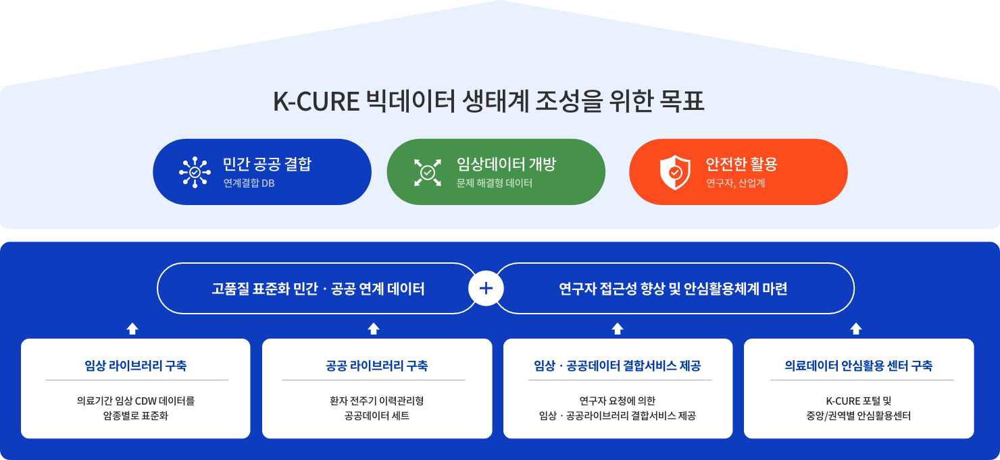
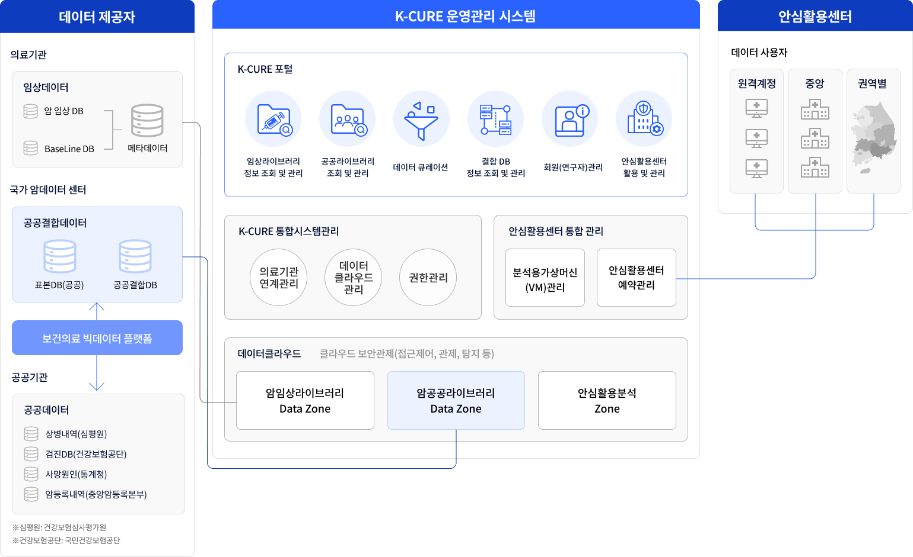

암 임상·공공 라이브러리, 연계결합DB 등 보건의료 데이터의 기초통계 등 활용 가능한 데이터셋의 검색
암 임상데이터
공공데이터
보건의료데이터
질환별 특화데이터
데이터 신청, 활용 승인, 반출 등 심의를 유기적으로 지원하기 위해 데이터 신청 관리
연구 설계 지원, 메타데이터 관리, 연구 데이터 생성 등 연구 데이터 활용 지원 및 연구수요자 매칭
연구데이터 생성-폐기의 전 주기 관리, 오남용 방지 등 주기적인 모니터링 및 품질관리 수행